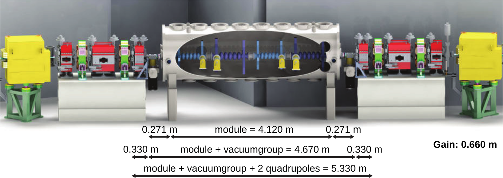
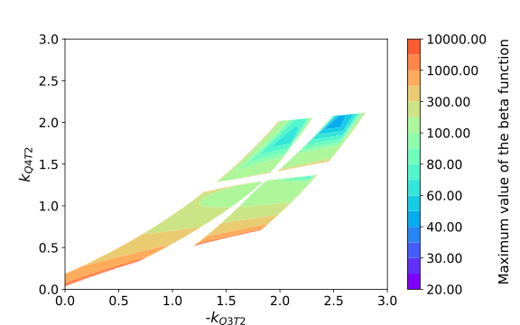
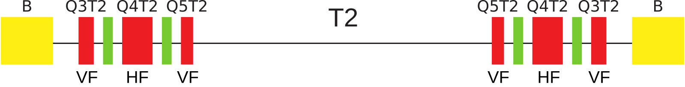
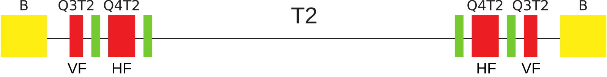
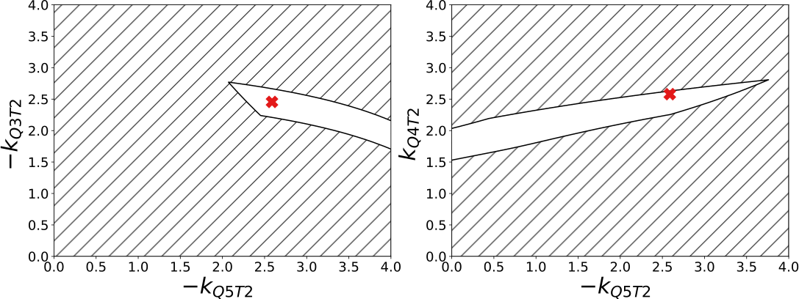
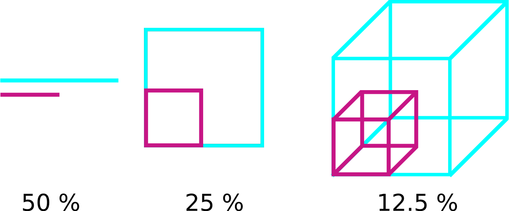
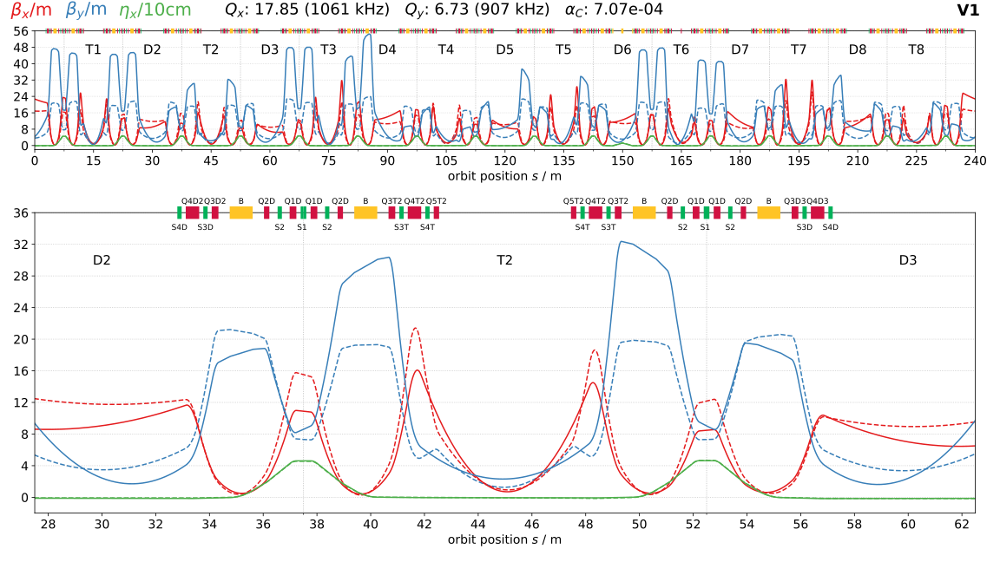
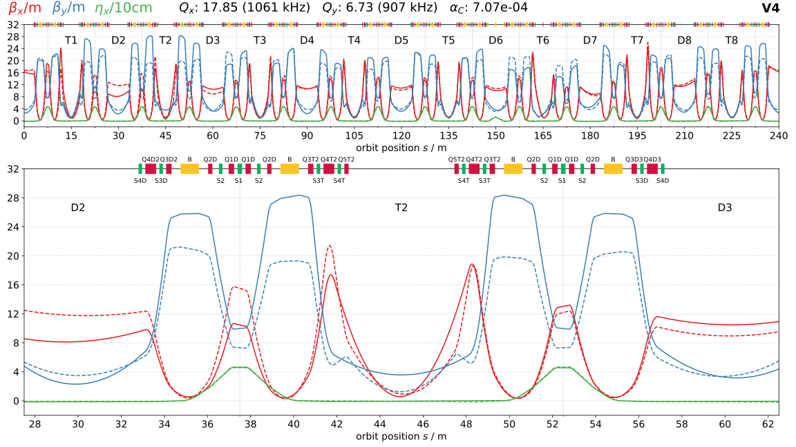
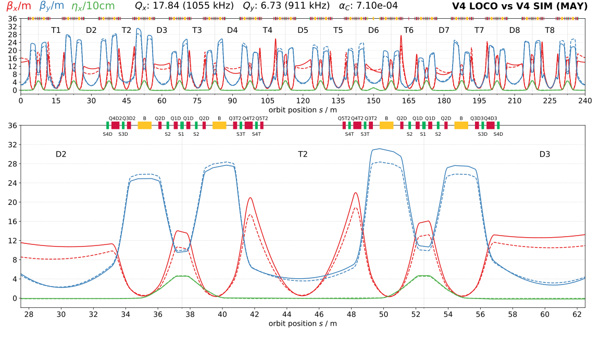
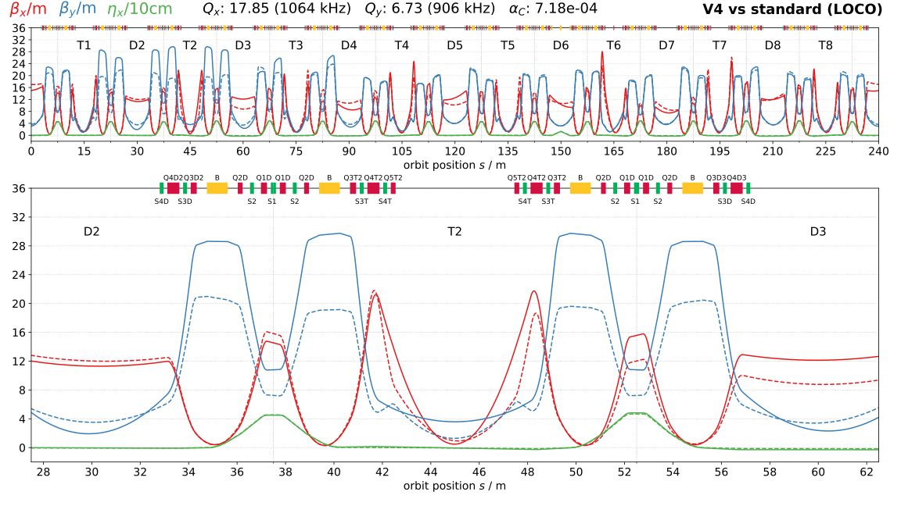

Optimization of the BESSY II optics for the VSR project
Increasing the available installation length for the VSR cavity
by Felix Andreas
Motivation
BESSY II - A third generation light source
- Third generation synchrotron light source
from THz (cm) to X-ray (nm) - located in Berlin Adlershof
- operated by the HZB
BESSY II - A third generation light source
The Variable pulse-length Storage Ring
One idea: Remove inner Quadrupoles to gain installation length
Transverse linear beam dynamics in circular accelerators
Transverse linear beam dynamics in circular accelerators
The equations of motion for a charged particle in a magnetic field in linear order:
Lattice stability
Transformation of the Twissparameter:
$$\textbf{B}(s+L) = \textbf{R}(s,L) \cdot \textbf{B}(s) \cdot \textbf{R}^T(s,L) \quad \mathrm{with}\quad \textbf{B}(s) = \begin{pmatrix} \beta(s) & -\alpha(s) \\ -\alpha(s) & \gamma(s) \end{pmatrix}$$Periodicity conditions of circular accelerators:
$$\beta(s) = \beta(s + C) \quad \forall \quad s$$Intial value of the beta function:
$$\beta(s) = \frac{2 R_{12}}{\underbrace{\sqrt{2 - R_{11}^2 - 2 R_{12} R_{21} - R_{22}^2}}_{\overset{!}{>}0}}$$Limits of the lattice stability - FODO cell
Stability condition:
$$2 - R_{11}^2 - 2 R_{12} R_{21} - R_{22}^2 > 0$$Scan for two quadrupoles of the BESSY II storage ring
Challenges:
- It is diffcult to find good initial paramters for an optimization method:
⇒ If the initial configuration is not stable, the optimizer is sort of "blind". - The discontinuity of the solution space complicates it to find global minima:
⇒ It needs a sophisticated optimization algorithm to "jump" between the stable regions.
The BESSY II Design lattice
Task: Turn off the Q5T2 quadrupoles and keep current beta function
🠋
First step: Finding a stable configuration
Quadrupole scans and the curse of dimensionality

The number of scan points grows exponentially with the degrees of freedom!
- the calculation of the twiss parameter would take $t_1 = \mathrm{1 ms} $.
- a quadrupole scan in the neighborhood of $l = 1 \mathrm{m} ^{-2}$ with a steps size $\Delta k = 0.01 \mathrm{m}^{-2}$
A scan with the combination of $M = 6$ magnets would need
Ratio of solution space to scanned space
The ratio of the solution space to the scanned space strongly depends on the interval of the scan.
Tested for a FODO cell
For higher dimensions it gets more difficult to choose a good scan interval. As the solutions space in general is unknown (and not continuous), this means that for higher dimensions more and more of the scanned area will not be a solution.
Optimization by minimization of a scalar function
Objective function(al):
$$ F(\beta) = \frac{1}{L} \int_0^L R\left(\frac{\beta(s)}{\beta_{\mathrm{ref}}(s)}\right)\mathrm{d}s \quad \textrm{with } R(x) = \begin{cases} 1, &\textrm{for } x < 1\\ x, &\textrm{else} \end{cases} $$Two conditions:
- The initial parameters must be stable.
- The optmization method has to handle the discontinuites.
Optimizing with Python + Scipy
def fitness(params):
for element, attribute, param in zip(elements, attributes, params):
setattr(element, attribute, param)
twiss = lin.get_twiss()
betaxres = twiss.betax_int / ref_twiss.betax_int
betayres = twiss.betay_int / ref_twiss.betay_int
betaxres[betaxres < 1] = 1
betayres[betayres < 1] = 1
betaxres = betaxres ** 4
betayres = betayres ** 4
beta_mean_res = np.mean([betaxres, betayres])
return beta_mean_res
scipy.optimize.minimize(fitness, initial_values)
Overview of solutions
V1: The local solution
Comparison of the V1 lattice (solid) with the current standard lattice (dashed).
V4: The best solution found
Comparison of the V4 lattice (solid) with the current standard lattice (dashed).
Testing V1-V4 at the machine
Comparison of the mean injection efficiency of the different version for an optimized sextupole setting for the V4 optics. The mean injection efficiency is marked with a red dashed line.
The best solution V4: Simulation vs LOCO measurement
Comparison of V4 LOCO (solid) with V4 SIM (dashed).
The best solution V4 compared to the current standard user optics
The loco measured V4 optics (solid) in comparison to the standard optics (dashed).
Conclusion and Outlook
Conclusion and Outlook
- Optimization of the non-linear beam dynamics
The sextupoles can be used to enhance the phase and momentum acceptance.
- Better conversion of the quadrupole strengths
- Test solutions with hardware modification
- A better optimization method